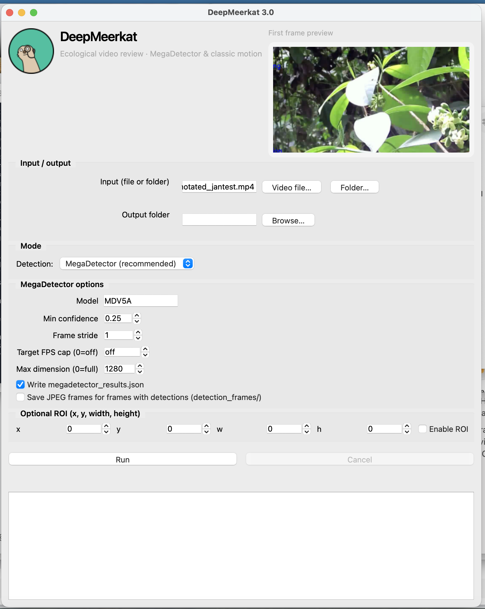
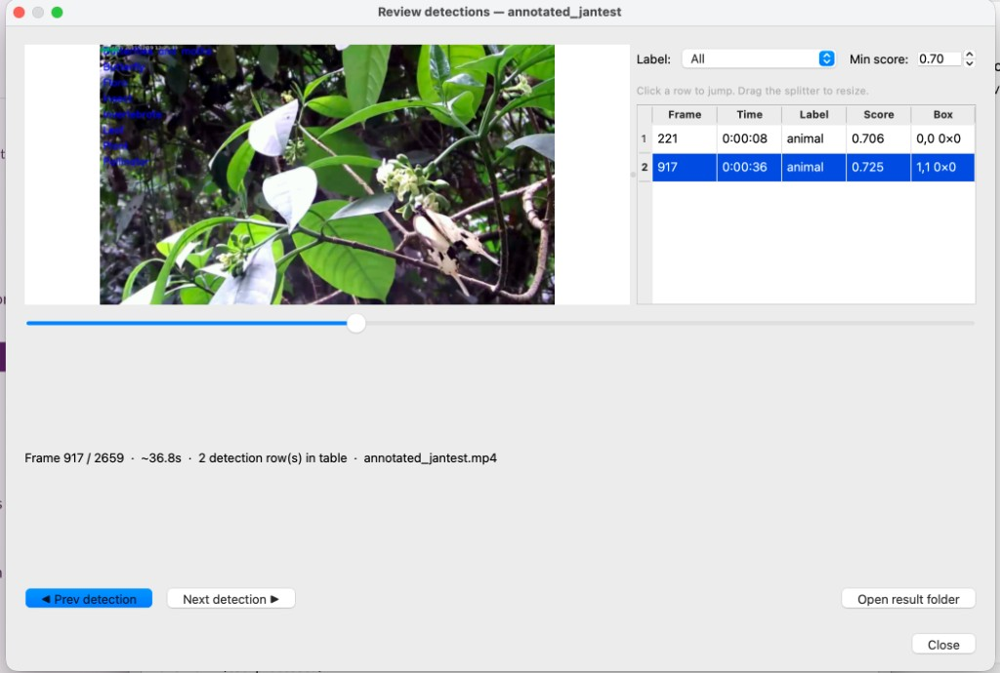

Overview
DeepMeerkat helps you process camera-trap and field video for wildlife monitoring. The default pipeline uses MegaDetector (animals, people, vehicles) with a modern PySide6 desktop app and a command-line interface. A classic OpenCV motion mode is available for legacy workflows.
How it works (MegaDetector mode)
Video frames are sampled (with optional stride or FPS cap), resized for inference if needed, and
passed through the MegaDetector model (e.g. MDV5A). Detections become bounding boxes and labels,
written to annotations.csv and optional JSON. You can then open the built-in
Review window to scrub the video, filter by score, and jump between detections.
- Optional region of interest (ROI) restricts where boxes are evaluated.
- Classic motion mode (OpenCV) is available when you do not need MegaDetector.
Download
Installers for macOS, Windows, and Linux are published with
GitHub Releases.
Open the latest release and download the asset that matches your platform (for example .dmg,
.exe, or AppImage/archive for Linux).
Prefer pip? pip install deepmeerkat — see the
docs for GUI extras ([ui]).
Screenshots

